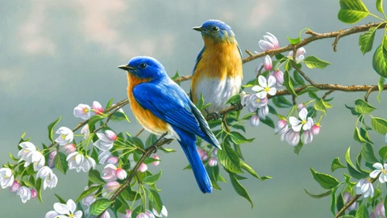

Birds
Birds are animals that have feathers, wings, and beaks, and they often fly and build nests for their eggs. For example, a sentence could be: "The colorful birds built a nest in the tall tree to lay their eggs". Another example is: "I enjoy watching birds fly through the sky, their wings catching the sunligh t as they soar".
Peacock
The peacock is the national bird of India and is known for its stunning, colorful, and long tail feathers that it can fan out like a fan. Males (peacocks) are famous for their elaborate courtship displays to attract females (peahens). These large birds can be found in forests and gardens, and their diet includes grains, insects, and small snakes.
Pexels
Parrots are intelligent, colorful birds known for their strong, curved beaks, social nature, and ability to mimic human speech. They live in warm, tropical regions and primarily eat fruits, seeds, and nuts. Many species are found in flocks and are a popular choice for pets, though some face threats of extinction.